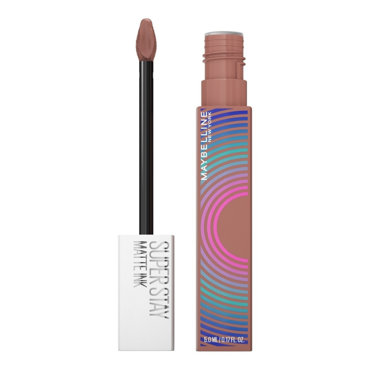

¡Labiales De Alta Calidad!
maybelline new york
LA PAGINA CON LOS MEJORES LABIALES.
No existe un accesorio de belleza mas atemporal y esencial que los labiales.Como el simbolo eterno de la feminidad y el poder, podemos decir con certeza
que todas las mujeres tienen en su posesion uno de estos,(ya sea en forma de lipgloss,lipstick o cualquiera de sus derivados.)
por años, las opciones de labiales que colorean sonrisas parecieron infinitas,ya que en realidad lo unico que buscabamos era el color perfecto que nos hiciera destacar.
pero ahora no enfrentamos ante una nueva necesidad en la que necesitamos que nuestro lipstick favorito este listo para lo que se venga
y que a pesar de que presentarse
a lo desconocido tenga la capacidad de mantenerse intacto a lo largo del dia o la noche.
 |
Descripción del labial
|
Descripción del labial
|
SUPER STAY MATTE INK EDICIÓN MUSIC COLLECTION - LABIAL LÍQUIDO MATTE
 Pioneer $170.00 |
Founder $170.00 |
 Seductress $170.00 |
 Amazonian $170.00 |
Lover $170.00 |
Founder $170.00 |
Evidentemente, lo que más llama la atención en un makeup son los labios, en especial cuando tienen un color vibrante y llamativo. Por eso es que los labiales son de los cosméticos básicos e imprescindibles en un kit de maquillaje.
Por supuesto que existe una infinidad de tipos de labiales con una gama de tonalidades inmensa y con diferentes formatos, desde un labial líquido hasta un labial en barra. Y nosotros ¡tenemos el indicado para ti!
Prueba labiales de larga duración y haz que tus labios luzcan hidratados, intensos y completamente sensacionales. Para ello, puedes escoger entre labiales mate de larga duración o brilloso como los labiales Maybelline SuperStay Matte Ink y Vinyl Ink